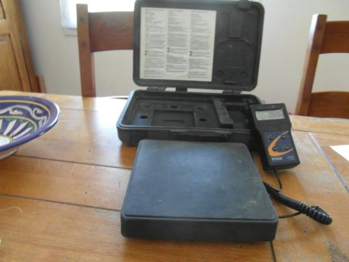

Thème / DomaineSimulation de charge au poids (azote)
Module atelier S8-F1 · 4 h × 2 passagesSimulation de charge au poids
SéquenceS8 · semaines 26-27
Nom, prénom (binôme)________________
Nom, prénom (binôme)________________
Date (passage 1 / passage 2)_______ / _______
Positionnement01234
Mise en situation professionnelle
Ordre d'intervention n° OI-S8-1 : la chambre froide de l'arrière-boutique est raccordée (S7-F1),
tirée au vide (S7-F2), réglée (S7-E1) et câblée (S7-E2). Il ne reste plus qu'à la charger en fluide
frigorigène pour la mettre en service. Mais la charge réelle exige l'attestation d'aptitude à la manipulation des fluides frigorigènes,
que vous préparerez en 2e année. Aujourd'hui, vous répétez le geste de charge à blanc, à l'azote :
bouteille sur balance, pesée, complément — jusqu'à le rendre sûr et fluide, comme un pilote répète sa check-list
avant chaque décollage. Passage 1 en semaine 26 (découverte guidée), passage 2 en semaine 27 (consolidation,
plus d'autonomie).

Une balance électronique de charge : un plateau posé au sol ou sur l'établi, relié
à un boîtier d'affichage (ON/OFF, UNIT, ZERO/TARE). D'après : Doc. Ressource Balance — modèle PRATIKA 100-05
(02_CAP-IFCA/S2-Systèmes).
⚠ Pourquoi on simule — En France, manipuler un fluide frigorigène réel
exige une attestation d'aptitude à la manipulation des fluides frigorigènes, délivrée après un examen que vous passerez
en 2e année. En 1re année, vous ne l'avez pas encore : vous ne pouvez donc pas
légalement charger une installation en fluide réel. On apprend alors le geste avec de l'azote, un
gaz neutre, sur du matériel pédagogique — pour être prêt le jour où l'attestation sera en poche.
Ce qui change depuis S7 — En S7, vous avez posé des manomètres et tiré au
vide un circuit sans jamais y introduire de matière : vous observiez et vous lisiez. Aujourd'hui, pour
la première fois, vous introduisez réellement une quantité de gaz pesée dans un montage. C'est le même azote
inoffensif utilisé depuis S5/S6, jamais un fluide frigorigène réel : aucune masse de fluide n'est chargée,
aucune récupération n'est demandée. Votre rôle aujourd'hui est de répéter le geste jusqu'à le rendre sûr et
fluide.
Passage 1 / Passage 2 — ce qui change
Passage 1 (semaine 26) — découverte guidée : le professeur fait d'abord la démonstration complète
du geste, commentée pas à pas. Vous réalisez ensuite votre 1re répétition, encadrée et
chronométrée, puis une 2e répétition en fin de séance. Passage 2 (semaine 27) — consolidation, plus d'autonomie : après un rappel bref, vous enchaînez
3 répétitions supplémentaires (n° 3, 4 et 5), avec moins d'aide, en cherchant à réduire votre temps sans
jamais bâcler la sécurité. Vous concluez par un verdict de fluidité motivé.
Tâches
T13 Tirer au vide, charger et contrôler l'installation sous tension simulé — seul le geste à blanc T14 Régler l'installation en fonctionnement découverte
Rigueur du geste (jamais dépasser la pression fixée) · sécurité azote et balance · honnêteté du chronométrage et des masses · autonomie croissante (passage 2)
Compétences (≤ 4)
Découverte — simuléeC4.2 Manipuler le fluide frigorigène et les huiles — geste simulé à l'azote ConfortementC4.7 Raccorder les équipements de charge, de mesure et de contrôle
Objectifs — je serai capable de…
tarer la balance électronique avant toute pesée ;
raccorder la bouteille d'azote au monodétendeur puis au poste de charge, sans fuite ;
ouvrir progressivement le circuit et régler le monodétendeur sans jamais dépasser la pression fixée par le professeur ;
peser en continu le transfert simulé d'azote jusqu'à la masse cible fixée par le professeur ;
compléter si besoin la charge simulée, fermer le circuit et purger les flexibles ;
chronométrer chaque répétition du geste complet et l'améliorer jusqu'à la fluidité, en respectant toujours la sécurité ;
lire, sur la machine école en fonctionnement, la surchauffe et le sous-refroidissement, pour relier le geste d'aujourd'hui à son objectif professionnel.
Prérequis — je sais déjà…
Ce n'est pas votre première fois avec une bouteille d'azote et un
monodétendeur : vous les avez déjà manipulés en S5 et S6. Vous avez posé et lu un manifold en S7-F1. Aujourd'hui,
on ajoute un instrument nouveau — la balance électronique — et un geste nouveau — la pesée d'un
transfert :
monter et utiliser la bouteille d'azote et son monodétendeur, en sécurité (S5, S6) ;
lire la relation pression/température sur la réglette (S4) ;
poser et lire un manifold (S7-F1, repère HP rouge / BP bleu) ;
l'épreuve d'étanchéité à l'azote a été prouvée au PV (S6) ;
É3 est passée : votre plan de progrès personnel s'applique aussi ici, en particulier sur la rigueur
du geste et l'honnêteté des relevés.
Si le montage du monodétendeur sur la bouteille
d'azote vous échappe encore, dites-le au professeur avant de commencer : la phase 4 de ce module le réactive.
Matériel (par binôme, aux deux passages)
Une bouteille d'azote et son monodétendeur (réglages de référence 8 bar / 200 bar, déjà
maîtrisés S5/S6/S7)
Une balance électronique de charge (touches ON/OFF, UNIT, ZERO/TARE)
Un réceptacle pédagogique vide posé sur la balance, qui reçoit le transfert simulé d'azote —
jamais une bouteille de fluide frigorigène
Un manifold (S7-F1) pour raccorder le monodétendeur au réceptacle
La machine école, en fonctionnement normal sur sa charge d'usine réelle et scellée — jamais
ouverte ni touchée par les élèves
La réglette P/T (S4) du fluide de la machine école
Document ressource fourni : table pression/température (P/T) du fluide de votre banc — voir le kit ressources élève.
Un chronomètre (ou téléphone en mode chrono, usage strictement encadré) + la check-list
avant-vol (en annexe de ce document)
Lunettes de protection (obligatoires pendant toute manipulation de la bouteille et du monodétendeur)
L'azote : un gaz sans danger chimique, mais pas sans risque
L'azote est un gaz inerte (il ne brûle pas, ne réagit pas), déjà utilisé sans
incident en S5 et S6. Deux risques restent réels : l'asphyxie en local confiné — l'azote remplace
silencieusement l'air respirable, sans aucune odeur d'alerte — et la haute pression de la
bouteille (≈ 200 bar). C'est pourquoi le professeur reste présent en permanence pendant toute
manipulation de la bouteille et du monodétendeur, même au passage 2 où vous gagnez en autonomie sur le geste et
le chronométrage, jamais sur la supervision.
Risque
Parade
Asphyxie en local confiné (l'azote n'a pas d'odeur)
Local ventilé, quantités d'azote limitées au geste, jamais de manipulation seul(e) sans professeur présent.
Bouteille sous haute pression (≈ 200 bar) qui chute ou se couche
Bouteille toujours debout et arrimée (chaîne ou support), jamais transportée sans son chapeau de protection.
Dépassement de la pression fixée au monodétendeur
Jamais dépasser la valeur donnée par le professeur en séance : ouverture progressive, surveillance continue du manomètre de sortie.
Charge lourde à la manutention (bouteille, balance)
Lever à deux si besoin, dos droit, jambes fléchies ; ne jamais faire glisser la bouteille au sol.
Masse ou temps relevé inventé ou recopié d'un autre poste
Le tableau des temps et des masses se remplit au moment réel de la répétition, jamais après coup ni copié.
Confusion avec un fluide frigorigène réel
Aucune bouteille de fluide frigorigène sur ce poste : seule une bouteille d'azote et un réceptacle pédagogique vide.
La logique de la check-list « avant-vol » — comprendre avant de répéter
Un pilote de ligne suit la même check-list avant chaque décollage, même après des milliers d'heures de
vol — non pas parce qu'il a oublié la procédure, mais parce que répéter dans l'ordre, à voix haute, en
cochant, élimine les oublis dangereux. Le geste de charge suit le même principe : 6 étapes, toujours dans le
même ordre, cochées et minutées, répétées jusqu'à la fluidité — jamais la vitesse au détriment d'une case
non cochée.
La check-list complète, à cocher à chaque
répétition, est fournie en annexe pleine page de ce document : gardez-la à portée de main tout au long
du module.
Les 6 étapes de la check-list — vue d'ensemble
1TARE — poser le réceptacle vide sur la balance, appuyer sur TARE/ZERO, vérifier l'affichage à 0.000.
2RACCORDEMENT — bouteille d'azote → monodétendeur → manifold → réceptacle, sans fuite, purge brève des flexibles.
3OUVERTURE — ouverture progressive du robinet bouteille, réglage du monodétendeur sans dépasser la pression fixée.
4PESÉE DU TRANSFERT SIMULÉ — lecture continue de la balance jusqu'à la masse cible fixée par le professeur.
5COMPLÉMENT — ajustement fin si besoin, fermeture définitive, purge des flexibles.
6CONTRÔLE SC/SR — lecture, sur la machine école en fonctionnement, de la surchauffe et du sous-refroidissement.
🚨 En cas d'incident — arrêtez immédiatement toute manipulation, fermez le
robinet de la bouteille, alertez le professeur. En cas de doute sur une odeur d'air « appauvri » ou un
étourdissement : sortez du local et alertez, l'azote ne donne aucun signal d'alerte olfactif. Trousse de secours
et arrêt d'urgence localisés en phase 5 de la séance.
Le professeur exécute le geste complet, poste par poste, en commentant chaque
étape de la check-list. Notez ce qui vous surprend ou ce que vous n'aviez pas anticipé.
Ce que je retiens de la démonstration :
Rappel S5/S6/S7 : le monodétendeur régule la haute pression de la bouteille
d'azote (≈ 200 bar) vers la pression de service fixée par le professeur — ici 8 bar à titre d'exemple de
réglage. D'après : schéma de principe monodétendeur, documents professeur S5/S6.
Étape B — 1re répétition, encadrée et chronométrée
☐ 1. TARE — poser le réceptacle vide sur la balance, appuyer TARE/ZERO, vérifier 0.000
PASSAGE 1 · SEMAINE 26 · JALON 2 — 2e répétition + contrôle SC/SR — ≈ 50 min
Vous refaites le geste complet une deuxième fois, en cherchant à gagner en
fluidité sans sauter aucune case. Vous complétez le tableau des masses, puis vous allez lire la surchauffe
et le sous-refroidissement sur la machine école, en fonctionnement normal.
2e répétition
☐ 1 à 5. Reprendre les 5 premières étapes de la check-list, cochées et chronométrées
☐ 6. Faire viser la répétition complète par le professeur
Tableau masse avant / après (charge simulée à l'azote)
Répétition
Masse avant (g)
Masse après (g)
Masse transférée (g)
Masse cible (g)
Écart (g)
N° 1 (jalon 1)
N° 2 (jalon 2)
La masse cible est fixée par le professeur
avant la séance : aucune masse de fluide n'est affirmée dans ce document, seule votre pesée réelle d'azote
compte.
Contrôle SC/SR — lecture sur la machine école
La machine école fonctionne en continu sur sa charge d'usine réelle, scellée :
vous ne la chargez pas, vous la lisez seulement — exactement le geste déjà maîtrisé en S7-F1. Cette
lecture relie votre geste d'aujourd'hui (peser un transfert) à son objectif professionnel : une charge
correcte se vérifie par la surchauffe et le sous-refroidissement.
📄 Ressource fournie — table pression/température. Pour trouver la température de saturation qui correspond à une pression (indispensable pour estimer la surchauffe SC et le sous-refroidissement SR), utilisez la réglette P/T multi-fluides ou la table du fluide de votre banc : R134a · R404A · R410A. N'inventez jamais une valeur : lisez-la sur la table.
Mesure
Valeur lue
Plage de référence (charte)
Cohérent ?
Surchauffe (SC)
5 à 10 K
☐ Oui ☐ À faire valider
Sous-refroidissement (SR)
4 à 8 K
☐ Oui ☐ À faire valider
Question de synthèse — Si la surchauffe ou le sous-refroidissement lus sont
hors de la plage de référence, qu'est-ce que cela signifierait sur une vraie charge (trop ou pas assez de
fluide) ? Vous ne le corrigez pas aujourd'hui, mais expliquez ce que vous comprenez.
Visa professeur — jalon 2
☐ 2e répétition validée ☐ Tableau des masses cohérent ☐ Lecture SC/SR réalisée et reportée ☐ Poste rangé
Visa : ________________ Heure : ________________
⚠ Rappel — fin du passage 1 — Le robinet de la bouteille d'azote reste fermé
entre deux répétitions et en fin de séance. Rendez-vous en semaine 27 pour le passage 2.
PASSAGE 2 · SEMAINE 27 · JALON 1' — 3e répétition, plus d'autonomie — ≈ 45 min
Ce qui change par rapport au passage 1 — Vous connaissez déjà les 6 étapes :
après un rappel bref, vous exécutez la répétition avec moins d'aide du professeur. Il reste présent
en permanence pour la sécurité, mais il redémontre moins et vous laisse davantage l'initiative sur le rythme.
3e répétition
☐ 1 à 5. Enchaîner les 5 premières étapes de la check-list, cochées et chronométrées, avec moins d'aide
☐ 6. Faire viser la répétition complète par le professeur
Répétition
Temps total
Étape la plus longue
Progrès depuis la répétition 2 ?
N° 3 (passage 2, autonomie)
Question — Qu'est-ce qui, dans vos deux répétitions du passage 1, vous
permet aujourd'hui d'aller plus vite sans sauter aucune étape ?
Visa professeur — jalon 1'
☐ Répétition correcte et rapide ☐ Pression jamais dépassée ☐ Autorisé(e) à poursuivre vers le jalon 2'
PASSAGE 2 · SEMAINE 27 · JALON 2' — répétitions 4 et 5, verdict de fluidité — ≈ 80 min
Vous enchaînez deux dernières répétitions, en visant la fluidité : un geste
sûr ET rapide, sans case oubliée. Vous complétez le tableau des temps sur l'ensemble des 5
répétitions, puis vous concluez par un contrôle SC/SR final.
Répétitions n° 4 et n° 5
☐ Répétition 4 : les 5 étapes de charge simulée, chronométrées, visées
☐ Répétition 5 : les 5 étapes de charge simulée, chronométrées, visées
Tableau des temps — les 5 répétitions
Répétition
Temps total
Anomalie observée
Visa prof
N° 1 (passage 1)
N° 2 (passage 1)
N° 3 (passage 2)
N° 4 (passage 2)
N° 5 (passage 2)
Mon verdict de fluidité :☐ FLUIDE (temps stable ou en baisse, aucune case oubliée)☐ À RETRAVAILLER
Justification :
Contrôle SC/SR final — lecture sur la machine école
Mesure
Valeur lue
Plage de référence (charte)
Cohérent ?
Surchauffe (SC)
5 à 10 K
☐ Oui ☐ À faire valider
Sous-refroidissement (SR)
4 à 8 K
☐ Oui ☐ À faire valider
Visa professeur — jalon 2'
☐ Répétitions 4 et 5 validées ☐ Verdict de fluidité motivé ☐ Contrôle SC/SR final réalisé ☐ Poste rangé, robinet fermé
☐ 1. Fermer le robinet de la bouteille d'azote et détendre le monodétendeur
☐ 2. Purger et débrancher les flexibles, remettre les bouchons de protection
☐ 3. Vider et sécher le réceptacle pédagogique
☐ 4. Remettre la balance à zéro, ranger son boîtier d'affichage
☐ 5. Nettoyer l'établi de mon poste
☐ 6. Vérifier que la bouteille d'azote est arrimée et debout pour le poste suivant
☐ 7. Retirer les EPI en dernier, une fois le poste totalement rangé
Jalons franchis
☐ Passage 1 : démonstration observée, répétitions 1 et 2 réalisées et validées, tableau des masses complété, lecture SC/SR réalisée
☐ Passage 2 : répétitions 3, 4 et 5 réalisées en autonomie croissante, tableau des temps complet, verdict de fluidité motivé, contrôle SC/SR final
Visa professeur (passage 1) : ________________ Visa professeur (passage 2) : ________________
Grille d'évaluation
Échelle FrigorX : 0 Non évalué · 1 Non acquis · 2 En cours
d'acquisition · 3 Acquis · 4 Parfaitement maîtrisé. Statut du jour : C4.2 Découverte — simulée ·
C4.7 Confortement — aucune de ces deux compétences n'est remontée sur École Directe dans ce module (pas
de statut Évaluation dans S8, il arrivera à É4, S9).
Compétence / savoir-être
Ancrage
0 Non évalué
1 Non acquis
2 En cours
3 Acquis
4 Maîtrisé
C4.2 Manipuler le fluide frigorigène et les huiles — geste simulé à l'azote
sur T13 · S5.2
Compétence non observée ce jour.
Ne parvient pas à enchaîner les 6 étapes du geste de charge simulée, même avec l'aide du professeur (tare oubliée, pression dépassée, bouteille couchée).
Enchaîne les 6 étapes avec l'aide du professeur (rappel d'une étape, correction d'un geste), sans dépasser la pression fixée.
Enchaîne seul(e) les 6 étapes du geste de charge simulée, dans l'ordre, sans dépasser la pression fixée, masse cible atteinte à la tolérance près.
Comme « Acquis », et gagne en fluidité au fil des répétitions (temps réduit sans geste bâclé), explique le sens d'une étape à un pair.
C4.7 Raccorder les équipements de charge, de mesure et de contrôle
Si vous étiez concerné(e) par un objectif de
progrès à É3 sur la rigueur du poste ou l'honnêteté du contrôle : avez-vous progressé aujourd'hui ?
Variantes
Consolidation : la démonstration du passage 1 est redécoupée en deux temps (raccordement puis pesée),
et le professeur reste au poste pour la répétition 1 entière.
Standard : déroulement tel que décrit dans ce document.
Approfondissement : après la répétition 5 validée, expliquer à un pair une étape de la check-list et
justifier pourquoi elle vient à cette place précise.
Documents à remettre
Ce document complété (les deux passages : répétitions, visas, tableaux, questions répondues)
Fiche de sécurité à cocher visée par le professeur, aux deux passages
Bon de commande hebdomadaire
D'après : Mise en service et
charge en fluide frigorigène — projet (02_CAP-IFCA/C4-MettreEnService), procédure de pesée et tableau masse
avant/après repris en principe, réécrits ici à l'azote (aucune masse de fluide réel, masse cible
« fixée par le professeur ») ; reglage bp sous azote.docx (séance CAP IFCA déjà conçue tout azote, sécurité,
vocabulaire de la check-list) ; DOSSIER RESSOURCES charge.docx (principe du montage balance/bouteille/manifold —
schéma repris en document professeur ; seuils de contrôle : la source indique sous-refroidissement 4-7 °C et
surchauffe 5-8 °C, « d'après », mais ce document retient les seuils de la charte FrigorX : surchauffe
5-10 K, sous-refroidissement 4-8 K) ; Doc. Ressource Balance (photo balance électronique PRATIKA 100-05,
02_CAP-IFCA/S2-Systèmes) ; schéma monodétendeur/bouteille d'azote (documents professeur S5/S6, réutilisé S7-F1).
Charte pédagogique FrigorX (§7 sécurité) ; référentiel CAP IFCA (codes C4.2, C4.7, T13, S5.2). Aucune masse de
fluide réel n'est affirmée dans ce document ; aucune procédure de récupération n'est demandée.
ANNEXE — CHECK-LIST « AVANT-VOL » DE LA CHARGE SIMULÉE À L'AZOTE
À conserver sous les yeux à chaque répétition (1 à 5). Cochez
chaque case au moment réel du geste — jamais après coup. Faites viser chaque étape par le professeur avant de
passer à la suivante, en particulier lors des deux premières répétitions.
Étape 1 — TARE
☐ Poser le réceptacle pédagogique vide sur la balance électronique
☐ Allumer la balance (touche ON), vérifier l'unité affichée (touche UNIT → kilogrammes ou grammes)
☐ Appuyer sur TARE/ZERO
☐ Vérifier que l'affichage indique bien 0.000 avant de continuer
Étape 2 — RACCORDEMENT
☐ Vérifier l'état des flexibles et des raccords (aucune fissure, aucun joint abîmé)
☐ Raccorder la bouteille d'azote au monodétendeur
☐ Raccorder le monodétendeur au manifold, puis le manifold au réceptacle posé sur la balance
☐ Purger brièvement chaque flexible avant le serrage définitif
☐ Contrôler l'absence de fuite (bulles de savon si besoin)
Étape 3 — OUVERTURE
☐ Ouvrir progressivement le robinet de la bouteille d'azote
☐ Régler le monodétendeur à la pression fixée par le professeur pour cette séance
☐ Vérifier en continu le manomètre de sortie : ne jamais dépasser la valeur donnée
☐ Ouvrir la vanne du manifold côté réceptacle
Étape 4 — PESÉE DU TRANSFERT SIMULÉ
☐ Lire la balance en continu pendant le transfert d'azote
☐ Surveiller l'approche de la masse cible fixée par le professeur
☐ Fermer la vanne du manifold dès la masse cible atteinte
Étape 5 — COMPLÉMENT
☐ Vérifier l'écart entre la masse relevée et la masse cible
☐ Si besoin, rouvrir légèrement pour un complément fin, puis refermer
☐ Fermer le robinet de la bouteille, purger et débrancher les flexibles
☐ Remettre les bouchons de protection
Étape 6 — CONTRÔLE SC/SR (lecture, pas de charge)
☐ Se déplacer vers la machine école, en fonctionnement normal sur sa charge scellée
☐ Lire la surchauffe (SC) et le sous-refroidissement (SR) à l'aide des manomètres et de la réglette P/T
☐ Comparer aux seuils de la charte : SC 5 à 10 K, SR 4 à 8 K
☐ Conclure : cohérent, ou à faire valider
D'après : Mise en service et
charge en fluide frigorigène — projet, reglage bp sous azote.docx (structure de la check-list, vocabulaire de
balance et de manodétendeur), Doc. Ressource Balance (fonctions ON/OFF/UNIT/TARE de la balance électronique).
La check-list ci-dessus est entièrement transposée à l'azote : aucune étape ne mentionne un fluide
frigorigène réel, aucune récupération n'est demandée.